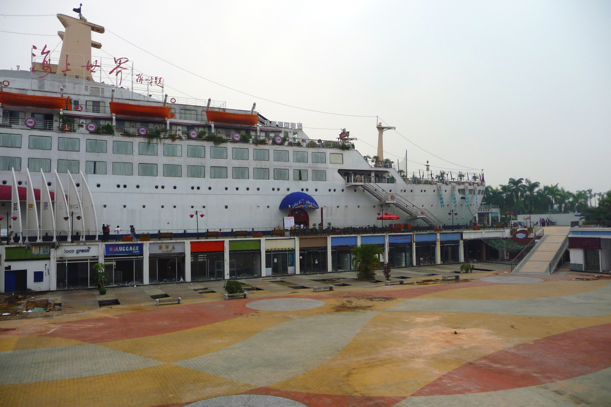

Theater and Music of Shenzhen:
The leading elements of music and theater in shenzhen focus around:
Cantonese Opera

Jo Schmaltz - Cantonese Opera Happy Valley
(CC-SA)
Music Festivals

Azchael - Shenzhen Midi Music Festival 2013
(CC-nc-nd)
Shekou's Center of Shops and Venues

dcmaster (CC-nc)
Popular Musical Genres of Shenzhen
- Classical: Chinese and Traditional
- Pop Music: Chinese and International
- Metal and Rock